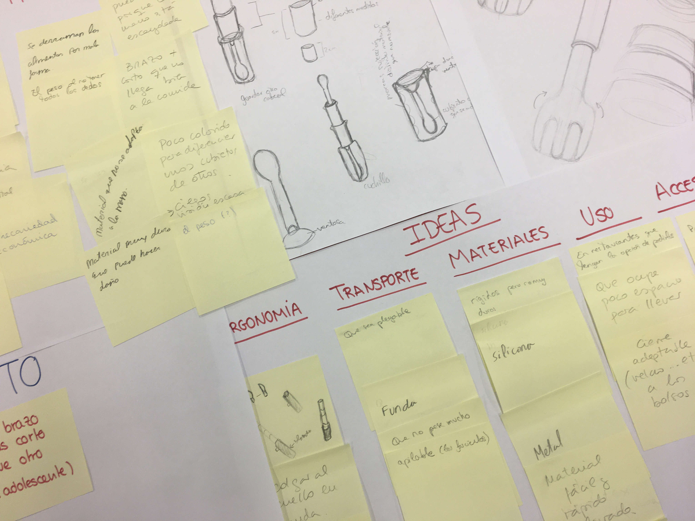
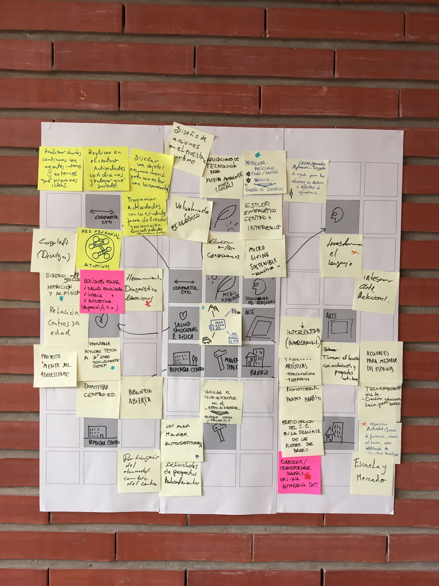
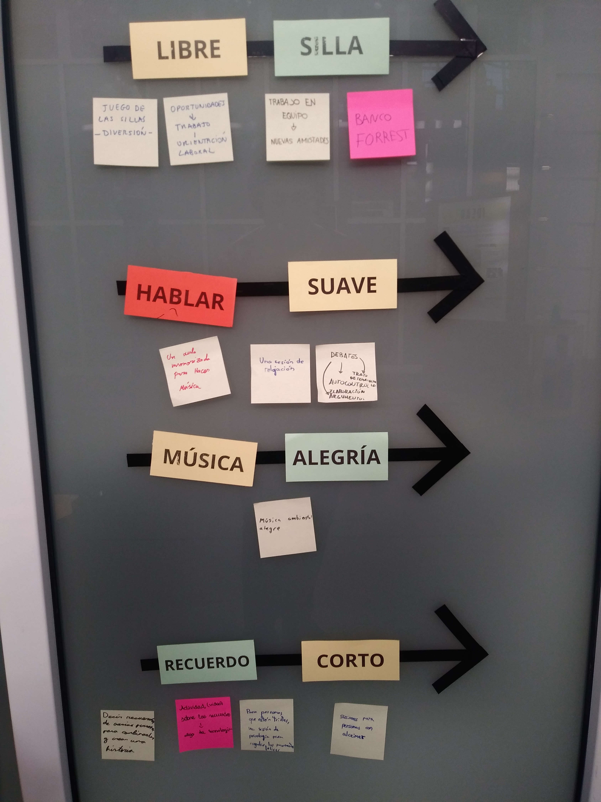

Técnicas de creatividad
1- Calentamiento:
Se trata de una dinámica en la que se le muestra al alumnado una serie de palabras, o bien en pantalla o por medio de tarjetas. Las palabras hacen referencia a un objeto (por ejemplo: MESA) A continuación se pide que imaginen y describan ese objeto. Una vez lo han hecho, de forma espontánea (por ejemplo: Marrón, con cuatro patas, para comer…) se les muestra la imagen de un objeto que responde a ese nombre pero que no es el prototipo más habitual (por ejemplo: una mesa de laboratorio, o una mesa con una sola pata, o de cristal, o de cartón…)
Este sería un ejemplo completo de la actividad:
Si te digo la palabra cuna,¿te la imaginas?, ¿Cómo es? El alumnado: “de madera, con barrotes… Que levante la mano quien haya imaginado una cuna rectangular, de madera y con barrotes. Pues una cuna puede ser así (mostrar la imagen de la cuna de Stoke) Si te digo la palabra exprimidor, ¿qué imaginas? ¿Quién ha imaginado un exprimidor mediano, blanco y eléctrico? Me lo temía! Un exprimidor puede ser así (mostrar uno industrial o muy grande) ¿Y si te digo la palabra secador de pelo? ¿Quién ha imaginado un secador negro de unos 25 centímetros? Un secador de pelo puede tener la forma de un cilindro (como el de Dyson)
Este es uno de los ejercicios que podemos hacer con nuestro alumnado antes de comenzar la fase de idear.
Reflexionaremos sobre las imágenes que nuestro cerebro nos devuelve automáticamente y pediremos a nuestro alumnado que se abra a más posibilidades.
Reta a tu alumnado y a ti mismo a idear, a imaginar soluciones diferentes.
2- Brainstorming o lluvia de ideas
Es la herramienta de creatividad por antonomasia.
Se trata de generar el máximo número de ideas en equipo en un tiempo limitado. Dependerá del número de alumnas y alumnos que tengamos en clase, de si hacemos la lluvia de ideas conjunta (toda la clase a la vez), o la planteamos por equipos con dinamizadores.
Podríamos fijar la duración de 20 a 50 minutos. Recordemos que Importa el número de ideas, no la “calidad” de las mismas.
Podemos hacer un brainstorming por escrito o a mano alzada (en el que una persona escribe las ideas de todos).
Para comenzar suele resultar más fácil hacerlo por escrito:
- Cada uno de los integrantes del equipo escribe una idea en una nota adhesiva, la lee en voz alta y la coloca en el panel, la pared o donde corresponda.
- Cada participante escribe en un anota adhesiva una idea y se la da al facilitador para que la coloque en el panel mientras va clasificando las ideas. (Recordemos cómo usar una nota adhesiva: letra legible, preferiblemente en mayúsculas, poco texto, algún dibujo o esquema)
Consejos para hacer el brainstorming:
- Es importante conseguir la mayor cantidad de ideas posible, y esto se consigue si todos participamos y colaboramos.
- Construye sobre las ideas de los otros, no critiques (recordad el cocodrilo)
- De una idea a priori poco interesante puede surgir una interesante.
- Se crea un atmósfera distendida, divertida, que hay que aprovechar para crear.
Una vez hayamos hecho la lluvia de ideas, las clasificaremos por categorías y seleccionaremos aquella que vayamos a prototipar.
El brainstorming inverso:
Es un brainstorming en el que buscamos ideas de lo que no queremos. Sirve para, al buscar ideas que no queremos seguir, pensemos en lo contrario y así surjan nuevas ideas. Por ejemplo: No queremos que sea aburrido. Traducción: queremos garantizar la diversión. ¿Cómo puede ser divertido?
Brainwriting:
6 personas, cada una en un papel, escriben 3 ideas en 5 minutos. Se pasan el papel, y vuelven a escribir. En media hora tienen 108 ideas.
3- Mapa mental
El mapa mental como herramienta de creatividad consiste en, partiendo de un tema o idea central, ir extrayendo otros pensamientos relacionados.
Se siguen las mismas normas que en el Brainstorming. Todas las ideas (y pensamientos) se deben apuntar en el “mapa”, conectándolas con aquellas que ya estaban escritas y que hayan desencadenado esa relación mental. De esta manera obtendremos una representación gráfica ordenada del proceso mental que nos ha llevado a cada idea.
Por ejemplo: Nuestro reto es ¿Cómo podríamos conseguir que el alumnado tuviera hábitos más saludables?
Podemos empezar con el tema central: Hábitos saludables. De ahí saldrán varias ramas: beber agua, ejercicio, alimentación…
De alimentación: 5 frutas/verduras, pirámide nutricional, almuerzos saludables, menús semanales, recetas de cocina…
De 5 frutas/verduras: semana de la fruta, hacer un huerto, conocer las temporadas de recogida de cada vegetal, que traigan fruta para almorzar, ir a visitar un huerto, esculturas con fruta,...
Esas serían algunas líneas del mapa mental pero ocurriría lo mismo con el resto de ideas.
4- Panel de ideas (ENLACE PRESENTACIÓN 1 BLOQUE 5)
Lo vimos en el caso del taller de re-diseño de mando de tv. Se trata de una lluvia de ideas en la que las categorías están pre-definidas.
Las categorías se pueden decidir entre todos los miembros del equipo antes de comenzar. Por ejemplo, si vamos a generar ideas para mejorar la biblioteca podemos establecer varias categorías: sobre el espacio, sobre la web, sobre el proceso, sobre los libros, sobre la lectura, sobre otras actividades que se pueden realizar en la biblioteca, etc.
Una vez establecidas las categorías se van aportando ideas. De este modo simplificamos, sobretodo al haber clasificado a priori; ya que la clasificación, una vez generadas todas las ideas, puede ser una tarea abrumadora.
Es posible que de este modo nos perdamos ideas más rompedoras, o no “clasificables”, ya que no hemos previsto el tema que abordan, aunque por lo general lo que viene bien es centrar los temas, ya que el alumnado tiende a dispersarse.

No obstante, es importante advertir que si a alguien le surge una idea, aunque no responda a ninguna categoría, puede decirla sin dudar. Por ejemplo, ideas relacionadas con la colaboración entre alumnos (que pudimos no prever para la mejora de la biblioteca)
Sigamos con el ejemplo del mando de televisión para enfatizar la idea:
Vamos analizando cada uno de los aspectos básicos de diseño para ir generando ideas que respondan al reto. Cada participante va escribiendo y dibujando un concepto por nota adhesiva, de modo que tendremos diferentes soluciones que tenga que ver con hacer el producto más ergonómico, o más intuitivo…
¿Cómo podríamos diseñar un mando para toda la familia, que se use en el entorno del hogar y que mejore la comprensión de sus botones, que sea fácil de usar para todos y que avise de que se terminan las pilas?
En la columna de uso podríamos poner la siguiente idea: “que tenga dos niveles de lectura, uno básico y otro más avanzado”. En la columna de funciones podríamos añadir: “avisa mediante un led rojo de que las pilas están a punto de acabarse”. En ergonomía: “Los botones básicos redondeados y grandes”. En materiales: “goma alrededor para que si se cae no se rompa”. En medioambiente: “pocas piezas y de un mismo material plástico” o “Utilizar fibra de bambú para las carcasas”. En contexto: “Cuidado con la grasa de las palomitas. Y si tiene una funda?”. En forma: “Tipo cacahuete para ayudar a que las personas con manos grandes lo cojan bien” ó “forma cilíndrica para mejorar el agarre”
No ocurre nada si varias ideas son contradictorias o incompatibles, de momento son ideas por categorías.
Es importante que los textos sean cortos, en mayúsculas o letra muy clara y ser visuales.
En cuanto puedan que se atrevan a dibujar esquemas.
Otra forma de ordenar el panel de ideas es trabajar alrededor de las áreas de mejora que nos habíamos fijado: cómo podemos hacer para mejorar el uso en cuanto a la batería, o cómo podemos hacer que se adapte a diferentes usuarios, por ejemplo.
5- Flor de loto
Es una herramienta que sirve para profundizar en el reto y poder generar hasta sesenta y cuatro ideas diferentes.
En el centro escribimos el reto y alrededor del mismo ocho ideas o categorías sobre las que profundizar, u ocho categorías que completar.
Ejemplo: si nuestro reto es: ¿Cómo podríamos generar puentes con la comunidad que rodea al centro educativo mediante un proyecto STEAM? Las categorías pueden ser: compartir conocimiento, lo relativo a medio ambiente, solucionar problemas personales, arte, barrio, espacio maker, repensar centro, salud emocional y física.
Estas categorías las representaremos mediante iconos. De esta forma transmitimos que es una categoría no una idea.

El icono de cada categoría se vuelve a dibujar en uno de los ocho cuadrados grises alrededor de los cuales se abre otra “flor” con ocho pétalos, que van a ser las ideas que generemos para esa categoría.
Otras técnicas de creatividad:
NOTA: Es muy eficaz fabricar tarjetas para poder trabajar con el alumnado las técnicas de creatividad que vas a conocer a continuación. Si además las tarjetas llevan velcro y podemos pegarlas en la pizarra o los cristales del aula, el alumnado percibe que se trata de algo que se sale de lo habitual y se predispone a trabajarlo con mayor interés. Cartulina de colores, velcros adhesivos y una impresora a color es todo lo que necesitas para elaborarlas.
6- Relaciones forzadas

Relacionamos dos palabras al azar, nos forzamos a relacionar palabras aparentemente inconexas entre sí y con nuestro proyecto para generar nuevas conexiones.
Ejemplo: Imaginemos que nuestro reto es ¿Cómo podríamos crear un nuevo centro de cultura, ocio y deporte para jóvenes en el barrio? En este momento estamos generando ideas en equipo sobre el espacio, actividades, servicios que ofrece...llevamos ya un rato realizando un brainstorming y parece que no llegamos a más ideas.
Vamos a utilizar la herramienta de relaciones forzadas: Cogemos dos palabras al azar: ala y negro.
Establecemos relaciones entre ellas y con nuestro proyecto.
Primero pensamos en palabras relacionadas con negro: noche, oscuro, peligro…Segundo, hacemos lo mismo con ala: libertad, movimiento, volar, conocer…
Ahora es el momento de relacionar los dos conceptos opuestos: por ejemplo, dar alas en momentos de peligro. Las actividades que nos surgen pueden ser: Actividad 1: asesoría psicológica/grupos de ayuda con temas relacionados con drogas, ludopatía…
Actividad 2: actividades para realizar por la noche, como alternativas de ocio: cine, debates, presentaciones de proyectos o ideas de los jóvenes…
Probamos con otro par de palabras: luna y pan. Luna: femenino, mujer, luz. Pan: alimento, sobrevivir, autonomía. Ideas: Servicio de apoyo a madres jóvenes solteras, voluntariado, asesoría, talleres para aprender oficio con presencia de la infancia…
7- Super-héroes
Nos ponemos en la piel de personajes fantásticos, superhéroes, que tienen características especiales, superpoderes que les hacen ver los problemas y las soluciones desde otra perspectiva.
Ejemplo: Seguimos con el ejemplo del centro de ocio para jóvenes. ¿Qué haría la chica Halcón, que tiene una visión super aguda para ayudar a los jóvenes?:
Idea 1: Cuando entraran por la puerta del centro vería su interior y podría saber cómo ayudarles mejor o como adaptarse a ellos…
Traducimos la idea en: realización de ficha súper personalizada o entrevista personal cuando te haces socio del centro, o pequeño taller para los nuevos cada principio de curso para conocer sus inquietudes y poder adaptar las actividades a sus gustos, preferencias…
¿Qué haría Mr. fantástico, que tiene la elasticidad como super poder?
Una persona elástica puede llegar muy lejos con sus brazos, ¿cómo llegar a los más tímidos, o a los que no salen de casa o a los que están jugando constantemente a videojuegos?

Idea: Actividad 1x1: tienes 1 hora de videojuegos gratis al día si haces 1 hora de mantenimiento del centro o participas en uno de nuestros talleres semanales: pintar un mural, cómic, etc… Estas ideas se clasificarían, se pulen, se desarrollan…
8- Analogías:
Buscamos entornos, productos, servicios afines para adaptar soluciones ya existentes a nuestro proyecto.
¿A qué se puede parecer un centro de ocio?
A una guardería, a un club de lectura, a una residencia de ancianos, a un instituto tecnológico, a una biblioteca, a un gimnasio…
Idea 1: Por ejemplo, si pensamos en un instituto tecnológico, podemos pensar que podría haber un vivero de ideas, como un vivero de empresas, que se pueda desarrollar en el centro de ocio.
Idea 2: Si pensamos en un gimnasio, podemos pensar en que haya entrenadores personales o asesores, o tutores o hermanos mayores, que puedan entrenar tus objetivos de ocio o desarrollo de los jóvenes…
NOTA: Las dos herramientas que vamos a ver a continuación se basan en hacernos preguntas en equipo.
En numerosas ocasiones nos centramos, casi obsesivamente, en buscar respuestas o soluciones a problemas dados; rara vez nos paramos a pensar en si nos hemos hecho las suficientes preguntas o al menos aquellas que nos hacen abrir la mirada y ser capaces de imaginar. Por eso estas dos herramientas son tan útiles, porque nos fuerzan a preguntar.
9- ¿Qué pasaría si? ó SCAMPER
Es una herramienta que se basa en una serie de preguntas.
Respondiendo las preguntas vislumbramos otras posibilidades que no habíamos contemplado.
Esta técnica de creatividad fue creada por Bob Eberlee a partir de un listado de verificación desarrollado por Alex Osborn, el inventor del brainstorming. Podemos verlo como una serie de brainstormings acotados, encadenados y complementarios.
¿Qué pasa si cambiamos algo?
¿Qué podemos sustituir? Por ejemplo, los adultos que gestionan el centro por jóvenes que gestionan el centro.
Idea: Centro de ocio autogestionado.
¿Qué podemos añadir? Podemos añadir más servicios de modo que se convierta en una extensión de tu casa.
Idea: Recepción de paquetes compras on-line…
¿Qué pasaría si lo eliminamos? ¿Si eliminamos el espacio físico? ¿Si eliminamos las paredes? ¿Si eliminamos las pantallas? ¿Podemos invertir papeles? Por ejemplo: Un centro para mayores gestionado y liderado por jóvenes.
10- Las 6 W: La reformulación del problema (
Las 5 W están basadas en las mismas palabras inglesas: what, who, where, when and why. Además de las 5W: qué, quién, cuándo, dónde y por qué, se puede añadir una sexta, cómo.
Es un listado de verificación. El uso de las 6W está vinculado con la presentación de noticias, con la investigación científica y policial. Es una fórmula para tener “la historia completa”. Aplicada a una fase creativa en un proyecto de Design Thinking nos ayuda a completar las ideas, a buscar alternativas, a profundizar en ellas.
¿Qué? – Tema Ejemplo: Es un centro de ocio, un club, una biblioteca, un lugar para soñar, un espacio no físico...
¿Por qué? – Motivo Ejemplo: Porque los jóvenes necesitan un espacio para relacionarse, porque el barrio necesita infraestructura…
Yo añado uno: ¿Para qué?, ya que considero no hay que perder de vista el propósito de lo que hacemos, e incluso pueden surgir otros propósitos en la fase creativa.
Por ejemplo: Para comunicarnos, para conocernos, para vivir, para desarrollar habilidades, para crear alternativas de ocio...
¿Dónde? - Ubicación/Contexto Ejemplo: En el barrio, en cada móvil, en la plaza, en el IES, en cada recreo...
¿Cuándo? – Secuencia Por las tardes, el fin de semana, en vacaciones, en puentes, cuando los padres trabajan...
¿Quién? – Personas Jóvenes, niños, adultos, ancianos, familias, hermanos, vecinos...
¿Cómo? - Método. Jugando, en comunidad, estilo comunidad de vecinos, por suscripción, abonado, gratis, porque sí…
Otras técnicas de creatividad:
Ideart, biónica o galería de famosos, son otras herramientas que podemos utilizar para generar ideas. Todas ellas nos permiten salir de las ideas más convencionales, del pensamiento automático y ordinario, nos permiten relacionar conceptos dispares o afines y buscar soluciones.
https://www.neuronilla.com/categoria/tecnicas-de-creatividad/tecnicas-para-generar-ideas/

Design Thinking en educación por Elena Bernia bajo licencia Creative Commons Reconocimiento-NoComercial-CompartirIgual 4.0 Internacional License.